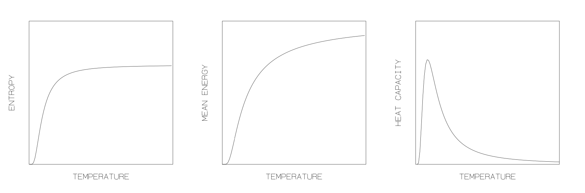

Solutions to problem set 3
3.1 Knowing, and understanding, the Boltzmann distribution
The Boltzmann distribution gives the probability \(p_r\) that a system will be found in a nominated microstate \(r\) of energy \(E_r\). Explicitly
\[ p_r = \frac{1}{Z} e^{-\beta E_r} \]
where
\[ Z = \sum_r e^{-\beta E_r} \]
If we choose two microstates with different energies, our system is always more likely to be found in the one with lower energy. The reason is that in accessing the higher energy microstate the system has to grab more energy from its environment, which means that its environment can access fewer microstates (has a smaller entropy). In other words, overall (taking into account system and environment), the higher energy microstate of the system can be accessed in fewer ways.
We can make this argument more explicit as follows. Consider two microstates of energies \(E_1\) and \(E_2\) respectively, and suppose that \(E_1\) is smaller than \(E_2\). When the system is in the microstate of energy \(E_1\), the surrounding bath has energy \(E_b = E_c - E_1\), where (as in section 3.2) we use the subscripts \(b\) and \(c\) to label respectively the bath and the composite system comprising the (physical) system and the bath. Thus, when the system is in the microstate 1, the bath may be in any of \(\Omega_b(E_c - E_1)\) microstates. Similarly, when the system is in the microstate 2, the bath may be in any of \(\Omega_b(E_c - E_2)\) microstates. Since the composite system is (can be thought of as being) isolated, each of its microstates is equally likely. It follows that
\[ \frac{\text{probability system is in microstate 1}}{\text{probability system is in microstate 2}} = \frac{\text{number of microstates open to composite system when system is in microstate 1}}{\text{number of microstates open to composite system when system is in microstate 2}} \]
From chapter 4.1 of the notes, this is:
\[ = \frac{\Omega_b(E_c - E_1)}{\Omega_b(E_c - E_2)} \]
Since \(\Omega_b(E_b)\) is an increasing function (whose gradient measures the inverse of the temperature) \(\Omega_b(E_c - E_1)\) must be bigger than \(\Omega_b(E_c - E_2)\) if, as supposed, \(E_1\) is smaller than \(E_2\). It follows that microstate 1 is the likelier.
3.2 Some numbers
Label the two states 1 and 2; let them have energies \(\varepsilon_1\) and \(\varepsilon_2\) respectively. The probability that a particle has energy \(\varepsilon_2\) is just the probability that it will be found in the state 2. Thus
\[ p(\varepsilon = \varepsilon_2) = p_2 = \frac{e^{-\beta \varepsilon_2}}{Z(1)} \]
Similarly, the probability the particle has energy \(\varepsilon_1\) is
\[ p(\varepsilon = \varepsilon_1) = p_1 = \frac{e^{-\beta \varepsilon_1}}{Z(1)} \]
It is useful to divide these expressions to eliminate \(Z(1)\). Thus
\[ \frac{p(\varepsilon = \varepsilon_2)}{p(\varepsilon = \varepsilon_1)} = \frac{p_2}{p_1} = \frac{e^{-\beta \varepsilon_2}}{e^{-\beta \varepsilon_1}} = e^{-\beta \Delta \varepsilon} \]
where \(\Delta \varepsilon \equiv \varepsilon_2 - \varepsilon_1\) and \(\beta=(kT)^{-1}\).
Now from the question
\[\begin{eqnarray*} \frac{p_2}{(p_1+p_2)}&=&1/3\\ \Rightarrow \frac{p_1}{p_2} &=& 2 \end{eqnarray*}\] Inserting this result in the above and solving for \(T\), gives
\[ T = \frac{\Delta \varepsilon}{k \ln(p_1 / p_2)} = \frac{\Delta \varepsilon}{k \ln 2}. \] Setting \(\Delta \varepsilon = 0.1 \, \text{eV}\) gives \(T = 1.68 \times 10^3 \, \text{K}\).
3.3 …and some thinking
Now we have to be a little more careful. In this case each particle has access to three states, two of which have the same energy. Label the three states 1, 2, and 3, with the understanding that
\[ \varepsilon_3 = \varepsilon_2 = \varepsilon_1 + \Delta \varepsilon \]
Then
\[ p(\varepsilon = \varepsilon_2) = p_2 + p_3 = 2p_2 = 2 \times \frac{e^{-\beta \varepsilon_2}}{Z(1)} \]
while
\[ p(\varepsilon = \varepsilon_1) = p_1 = \frac{e^{-\beta \varepsilon_1}}{Z(1)} \]
Dividing in order to eliminate \(Z(1)\) yields
\[ \frac{p(\varepsilon = \varepsilon_2)}{p(\varepsilon = \varepsilon_1)} = \frac{2 \times p_2}{p_1} = 2 \times e^{-\beta \Delta \varepsilon} \]
and from the question
\[\begin{eqnarray*} \frac{p_2+p_3}{(p_1+p_2+p_3)}&=&1/3\\ \Rightarrow\frac{2p_2}{(p_1+2p_2)}&=&1/3\\ \Rightarrow \frac{p_1}{p_2} &=& 4 \end{eqnarray*}\]
Thus \[ T = \frac{\Delta \varepsilon}{k \ln(p(\varepsilon = \varepsilon_1) / 2p(\varepsilon = \varepsilon_2))} = \frac{\Delta \varepsilon}{k \ln 4} = \frac{\Delta \varepsilon}{2k \ln 2} \]
leading to \(T = 864 \, \text{K}\), half the temperature we found in the preceding question. We need a lower temperature to achieve the same proportion of particles with the higher energy because, in this case, there are more ways (twice as many!) in which each particle can have the higher energy.
3.4 How to divide and conquer
Consider the magnetic and the vibrational ‘aspects’ of a solid. The associated energy in microstate \(r\) can usually be written (to a good first approximation) as a sum:
\[ E_r = E_{r_v} + E_{r_m} \]
where \(r_v\) and \(r_m\) label the vibrational and magnetic states implicit in the microstate label \(r\), and the two terms on the right-hand side give the energies associated with the two aspects.
Then the partition function can be written as follows:
\[ Z = \sum_r e^{-\beta E_r} = \sum_{r_v} e^{-\beta E_{r_v}} \times \sum_{r_m} e^{-\beta E_{r_m}} = Z^v \times Z^m \]
So the partition function is just the product of the partition functions associated with the two aspects.
This result is a generalisation of the claim (Key Point 12) that the partition function of \(N\) weakly interacting particles is just the \(N^{\text{th}}\) power of the partition function of one of them.
Its utility lies in the fact that it allows us to deal separately with the different aspects of the behaviour of a complex system, calculating the partition function for each one in turn.
The result will, hopefully, seem intuitively reasonable: when we are considering one aspect, any other just acts as an auxiliary heat bath, a reservoir of energy with which the aspect of interest can exchange energy.
3.5 Minimising the free energy
The Helmholtz free energy is defined as:
\[ F = E - TS \]
Taking the derivative of \(F\) with respect to \(E\):
\[ \frac{dF}{dE} = \frac{d}{dE} \left( E - TS \right) \]
In general, \(S = S(E)\), and the temperature \(T\) is constant (for this derivation). Thus:
\[\begin{eqnarray*} \frac{dF}{dE} &=& \frac{dE}{dE} - T \frac{dS}{dE}\\ & = & 1 - T \frac{dS}{dE}\\ \end{eqnarray*}\]
Thus the identification
\[ T = \left( \frac{\partial E}{\partial S} \right)^{-1} \] minimises the free energy. This definition of temperature in terms of entropy is the one given in lectures.
3.6 A qualitative thinking exercise
When applied to a system of weakly interacting particles, the Boltzmann theory tells us that the partition function can be written as \(Z = Z(1)^N\), where
\[ Z(1) = \sum_i e^{-\beta \varepsilon_i} \]
is the partition function for one particle, so that the sum extends over the states \(i = 1, 2, \dots q\) of one particle, with energies denoted by \(\varepsilon_i\), and we are told that the number of states \(q\) is finite. The probability of finding a (nominated) particle to be in a state \(i\) is then
\[ p_i = \frac{e^{-\beta \varepsilon_i}}{Z(1)} \]
which one may view as a direct application of the original Boltzmann distribution, with the ‘system’ chosen as one particle, with all the other particles acting as a heat bath.
The basic physics is controlled by the limiting (low and high \(T\)) behaviour of the set of probabilities \(p_i\).
For low \(T\), a particle is most likely to be found in one of the lowest energy states; it will be in its ground state when \(T \ll \Delta \varepsilon / k\) where \(\Delta \varepsilon\) is the energy spacing between the ground state and the first excited state.
For high enough \(T\) (specifically when \(T \gg (\varepsilon_q - \varepsilon_1)/k\); convince yourself about this!) each particle is essentially equally likely to be in any one of its states.
The implications for \(S\), \(E\), and the heat capacity \(C\) should be clear:
The entropy evolves smoothly from zero, at \(T = 0\) (where the underlying picture is one of ‘order’, with everything in its ground state) to a finite upper limiting value at high \(T\) (associated with the ‘most disordered’ macrostate in which a particle is equally likely to be in any one of its states).
The energy \(E\) evolves in a qualitatively similar way, from a minimum at \(T = 0\) (just \(N \times \varepsilon_1\), the ground state energy for a single particle) to a finite upper limit (just \(N \times \varepsilon_{\text{av}}\), where \(\varepsilon_{\text{av}} = q^{-1} \sum_{i=1}^{q} \varepsilon_i\) is the average of the one-particle energy levels).
The heat capacity \(C\) mirrors the slope of the \(E\)-versus-\(T\) curve and thus evolves from zero, to a peak, and back to zero, forming a hump.

- Entropy vs. Temperature: Shows a smooth increase from zero to a limiting value.
- Mean Energy vs. Temperature: Starts at a minimum and approaches a finite upper limit.
- Heat Capacity vs. Temperature: Peaks at an intermediate temperature and approaches zero at both low and high temperatures.